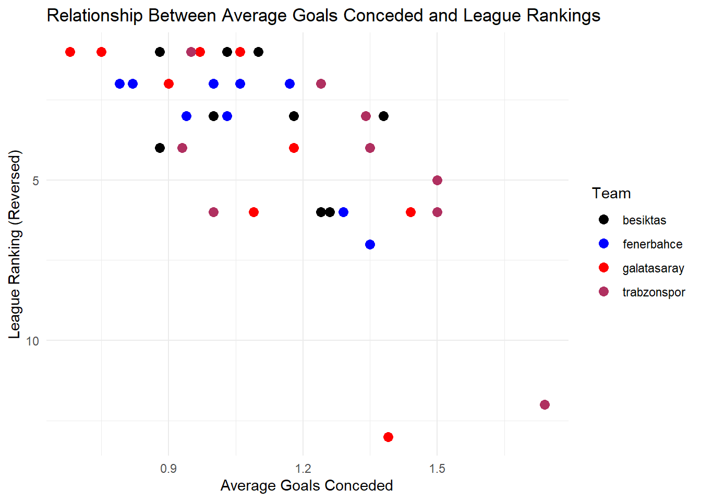

Code
library(ggplot2)
library(car)
library(ggrepel)
library(readxl)library(ggplot2)
library(car)
library(ggrepel)
library(readxl)# Read data from the Excel file
dataset <- read_excel("C:/Users/Emir/OneDrive/Desktop/dataset.xlsx")
# Select the necessary columns for the plot
df <- data.frame(
avg_goals_conceded = dataset$avg_goals_conceded,
avg_ball_possession = dataset$avg_ball_possession,
rankings = dataset$rankings,
avg_shoots = dataset$avg_shoots,
avg_shoots_on_target = dataset$avg_shoots_on_target,
avg_goals_scored = dataset$avg_goals_scored,
squad_market_values = dataset$squad_market_values,
rankings = dataset$rankings,
Season = dataset$Season,
Team = dataset$Team
)
# Define team colors
team_colors <- c(
"fenerbahce" = "blue",
"galatasaray" = "red",
"besiktas" = "black",
"trabzonspor" = "maroon"
)
# Create the plot
ggplot(df, aes(x = avg_goals_conceded, y = rankings, color = Team)) +
geom_point(size = 3) +
scale_color_manual(values = team_colors) +
scale_y_reverse() +
labs(
title = "Relationship Between Average Goals Conceded and League Rankings",
x = "Average Goals Conceded",
y = "League Ranking (Reversed)",
color = "Team"
) +
theme_minimal()
ggplot(df, aes(x = avg_ball_possession, y = avg_goals_scored, color = Team)) + geom_point(size = 5, alpha = 0.7) +
scale_color_manual(values = c( "fenerbahce" = "blue", "galatasaray" = "red", "besiktas" = "black", "trabzonspor" = "maroon" )) +
labs( title = "Relationship Between Ball Possession and Goals Scored", x = "Average Ball Possession (%)", y = "Average Goals Scored", color = "Team" ) +
theme_minimal()# Regresyon modeli oluşturma
model <- lm(rankings ~ avg_goals_scored + avg_goals_conceded, data = df)
# Modelin ANOVA ve regresyon grafikleri
avPlots(model)# Örnek veri çerçevesi (kendi verilerinizi kullanabilirsiniz)
ggplot(df, aes(x = Season, y = rankings, color = avg_ball_possession)) +
geom_point(size = 8, alpha = 0.7) + # Noktalar
geom_text(aes(label = Team), size = 3, vjust = -1) + # Takım isimleri
scale_y_reverse() + # Y eksenini ters çevir (Rankings)
scale_color_gradient(low = "yellow", high = "purple", name = "Ball Possession (%)") + # Renk gradyanı
labs(
title = "Average Ball Possession and League Rankings Over Seasons",
x = "Season",
y = "League Ranking (Reversed)"
) +
theme_minimal() +
theme(
axis.text.x = element_text(angle = 45, hjust = 1), # X ekseni etiketlerini döndür
aspect.ratio = 0.7 # Grafik oranını ayarla
)
correlation_possession_rankings <- cor(df$avg_ball_possession, df$rankings, use = "complete.obs")
cat(sprintf(
"The correlation between average ball possession and league rankings is %.2f.\n",
correlation_possession_rankings
))The correlation between average ball possession and league rankings is -0.32.Correlation between ball possession and rankings: -0.317401286701104
The negative value indicates that as the ball possession percentage increases, the ranking improves (lower numerical values represent better rankings). This suggests that higher ball possession is associated with better league performance, but the relationship is not very strong. Weak Correlation:
A correlation value of -0.3174 shows a weak relationship between the two variables. Ball possession alone does not significantly determine league rankings. Conclusion:
While ball possession plays a role in improving rankings, other factors such as goals scored, goals conceded, and defensive or offensive efficiency likely have a stronger influence on the overall_performance.
Summary:
Negative Correlation (-0.3174): Higher ball possession is linked to better rankings, but the relationship is weak.
Weak Influence: Ball possession alone has limited impact on rankings compared to factors like goals scored and conceded.
Conclusion: Ball possession contributes to performance but is less significant than other metrics.
“I’ve have never seen a bag of money score a goal.” - Johan Cruyff

# Örnek veri çerçevesi (kendi verilerinizle değiştirebilirsiniz)
# İlk 10 sıralama ile filtreleme
filtered_df <- df[df$rankings <= 10, ]
# Grafik oluşturma
ggplot(filtered_df, aes(x = Season, y = rankings, size = squad_market_values, color = Team)) +
geom_point(alpha = 0.7) + # Bubble chart
geom_text_repel(aes(label = Team), size = 3) + # Prevent overlapping labels
scale_y_reverse(breaks = 1:10) + # Reverse y-axis and set breaks from 1 to 10
scale_size_continuous(range = c(3, 10), name = "Squad Market Value (€)") + # Adjust bubble size
scale_color_manual(values = c(
"fenerbahce" = "blue",
"galatasaray" = "red",
"besiktas" = "black",
"trabzonspor" = "maroon",
"basaksehir" = "orange"
)) + # Custom team colors
labs(
title = "Seasonal League Rankings and Squad Market Values (Top 10)",
x = "Season",
y = "League Ranking (Reversed)",
size = "Squad Market Value (€)",
color = "Team"
) +
theme_minimal() +
theme(
axis.text.x = element_text(angle = 45, hjust = 1), # Rotate x-axis labels for readability
aspect.ratio = 0.7 # Adjust aspect ratio
)correlation_market_values_rankings <- cor(df$squad_market_values, df$rankings, use = "complete.obs")
print(paste("Correlation between squad market values and rankings:", correlation_market_values_rankings))[1] "Correlation between squad market values and rankings: -0.258059534138834"The correlation between squad market values and rankings is -0.2581, indicating a weak negative correlation. As squad market values increase, rankings tend to improve, but the relationship is not strong.
While higher squad market values are linked to better performance, other factors like team strategy, player performance, and injuries are likely more significant. This also aligns with Johan Cruyff’s quote: “I’ve never seen a bag of money score a goal.” This suggests that while financial resources can support success, they do not guarantee it without proper execution on the field.
cor_goals_scored <- cor(df$avg_goals_scored, df$rankings, use = "complete.obs")
cor_goals_conceded <- cor(df$avg_goals_conceded, df$rankings, use = "complete.obs")
cor_ball_possession <- cor(df$avg_ball_possession, df$rankings, use = "complete.obs")
cor_market_values <- cor(df$squad_market_values, df$rankings, use = "complete.obs")cat("Correlation between goals scored and rankings:", cor_goals_scored, "\n") Correlation between goals scored and rankings: -0.7267469 cat("Correlation between goals conceded and rankings:", cor_goals_conceded, "\n") Correlation between goals conceded and rankings: 0.6880453 cat("Correlation between ball possession and rankings:", cor_ball_possession, "\n") Correlation between ball possession and rankings: -0.3174013 cat("Correlation between squad market values and rankings:", cor_market_values, "\n")Correlation between squad market values and rankings: -0.2580595 Goals Scored and Rankings:
-0.72) indicates that scoring more goals is strongly associated with better rankings.Goals Conceded and Rankings:
0.68) shows that conceding fewer goals significantly improves rankings. Defense plays a crucial role in team performance.Ball Possession and Rankings:
-0.31) suggests that ball possession has a limited impact on rankings.Squad Market Values and Rankings:
-0.26) indicates that higher squad market values are associated with better rankings, but the relationship is not strong.The factor with the strongest correlation (highest absolute value) has the most significant impact on rankings.
Expected Outcome:
Goals Scored: Likely to be the most important factor for better rankings.
Goals Conceded: Defense is crucial and ranks second.
Ball Possession and Squad Market Value: These factors have a weaker impact on rankings compared to goals scored and conceded.
In summary, achieving a top ranking in a football league is primarily determined by a combination of offensive efficiency (scoring goals) and defensive strength (conceding fewer goals). While ball possession and squad market value contribute to a team’s overall success, their effect on rankings is secondary. The analysis shows that teams with a strong offensive and defensive balance tend to secure the best positions in the league, as they can win matches consistently and maintain a competitive edge throughout the season. Financial resources and possession metrics may enhance a team’s performance, but without effective goal-scoring and defense, they do not guarantee success. Therefore, the most crucial takeaway is that goals scored and goals conceded are the two primary factors driving a team’s ranking, with ball possession and squad market value playing more of a supporting role.